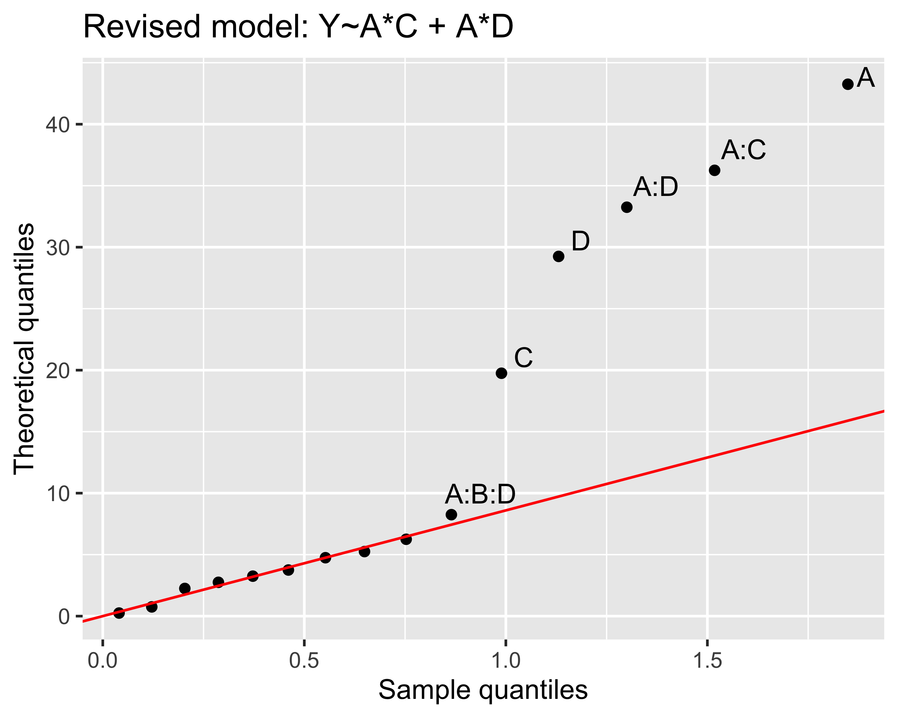

A B C Y StdOrder RunOrder
2 1 -1 -1 NA 2 2
3 -1 1 -1 NA 3 4
5 -1 -1 1 NA 5 3
8 1 1 1 NA 8 1
But mind you! for this to work, columns A, B, and Cmust NOT be factors! (in the R sense)
Note
It holds the signs algebra: \(X\cdot X=I,~I\cdot X = X\), thus \(CI = ABCC~\rightarrow~C=AB\)
Simple example in vanilla R
Analyzing the FP is mostly a matter of:
defining a linear model, Y~A*B*C
using lm() to fit the model
using residuals() to check the residuals for normality and patterns
using anova() to analyze the model
simplify the model if necessary
But if the FP is non-replicated, you can’t fit a model unless you remove some terms from the general linear model Y~A*B*C. To do so, Daniel’s method suggests to make a Q-Q plot of the effects: not straightforward
Simple example in vanilla R
As an example for a \(2^4\) FP, the Daniel’s Q-Q plot of the effects can be obtained by:
# build a full linear model:fp.lm <-lm(Y ~ A*B*C*D, data=fp)# prepare plot data:len <-length(fp.lm$effects)effects <- fp.lm$effects[2:len]# Q-Q plot:qq <-qqnorm(effects)qqline(effects)# add names:text(qq$x, qq$y, labels=names(effects))
Simple example in vanilla R
Problems:
difficult to manage scaled unitsvs. non scaled units
factor names aren’t mnemonic (which parameter is represented by F?)
fractioning an FP is not trivial
Daniel’s method is tricky and repetitive
augmenting a plan is not trivial when the number of factors is 4 or more
everything is not very tidy (in the sense of tidyverse)
Enter adas.utils package
The package is available on CRAN:
install.packages("adas.utils")library(adas.utils)
Don’t forget to look at the vignette:
vignette("adas.utils")
Plain FPs
Base \(2\cdot 2^2\) FP:
library(adas.utils)fp_design_matrix(2, rep=2)
Factorial Plan Design Matrix
Defining Relationship: ~ A * B
Factors: A B
Levels: -1 1
Fraction: NA
Type: plain
# A tibble: 8 × 7
StdOrder RunOrder .treat .rep A B Y
<int> <int> <chr> <int> <dbl> <dbl> <lgl>
1 1 8 (1) 1 -1 -1 NA
2 2 6 a 1 1 -1 NA
3 3 3 b 1 -1 1 NA
4 4 4 ab 1 1 1 NA
5 5 1 (1) 2 -1 -1 NA
6 6 5 a 2 1 -1 NA
7 7 2 b 2 -1 1 NA
8 8 7 ab 2 1 1 NA
Note
Note the Yates’ treatment names in .treat column
Plain FPs, with named factors
We can tie factors with corresponding parameter names:
Factorial Plan Design Matrix
Defining Relationship: ~ A * B
Factors: A B
Levels: -1 1
Fraction: NA
Type: plain
Factor names:
A: Temperature
B: Pressure
# A tibble: 8 × 7
StdOrder RunOrder .treat .rep A B Y
<int> <int> <chr> <int> <dbl> <dbl> <lgl>
1 1 1 (1) 1 -1 -1 NA
2 2 2 a 1 1 -1 NA
3 3 5 b 1 -1 1 NA
4 4 4 ab 1 1 1 NA
5 5 3 (1) 2 -1 -1 NA
6 6 6 a 2 1 -1 NA
7 7 8 b 2 -1 1 NA
8 8 7 ab 2 1 1 NA
Factorial Plan Design Matrix
Defining Relationship: ~ A * B
Factors: A B
Levels: -1 1
Fraction: NA
Type: plain
Scales suffix: .scaled
Scaled factors:
A.scaled: [20, 25]
B.scaled: [75, 125]
Factor names:
A: Temperature
B: Pressure
# A tibble: 8 × 7
.treat .rep A B A.scaled B.scaled Y
<chr> <int> <dbl> <dbl> <dbl> <dbl> <lgl>
1 (1) 1 -1 -1 20 75 NA
2 a 1 1 -1 25 75 NA
3 b 1 -1 1 20 125 NA
4 ab 1 1 1 25 125 NA
5 (1) 2 -1 -1 20 75 NA
6 a 2 1 -1 25 75 NA
7 b 2 -1 1 20 125 NA
8 ab 2 1 1 25 125 NA
Augmented FPs
We can augment a \(2^n\) FP with a central treatment:
Factorial Plan Design Matrix
Defining Relationship: ~ A * B * C
Factors: A B C
Levels: -1 1
Fraction: NA
Type: centered
Scales suffix: _s
Scaled factors:
B_s: [10, 20]
# A tibble: 6 × 9
StdOrder RunOrder .treat .rep A B C B_s Y
<int> <int> <chr> <int> <dbl> <dbl> <dbl> <dbl> <lgl>
1 7 3 bc 1 -1 1 1 20 NA
2 8 7 abc 1 1 1 1 20 NA
3 9 11 center 1 0 0 0 15 NA
4 10 10 center 2 0 0 0 15 NA
5 11 12 center 3 0 0 0 15 NA
6 12 9 center 4 0 0 0 15 NA
Augmented FPs
And then further augment the FP with axial treatments to get a rotatable Centered Composite Design (CCD):
Factorial Plan Design Matrix
Defining Relationship: ~ A * B * C * D * E
Factors: A B C D E
Levels: -1 1
Fraction: I=ABCD I=BCDE
Type: fractional
# A tibble: 8 × 9
.treat A B C D E Y ABCD BCDE
<chr> <dbl> <dbl> <dbl> <dbl> <dbl> <lgl> <dbl> <dbl>
1 (1) -1 -1 -1 -1 -1 NA 1 1
2 bc -1 1 1 -1 -1 NA 1 1
3 bd -1 1 -1 1 -1 NA 1 1
4 cd -1 -1 1 1 -1 NA 1 1
5 abe 1 1 -1 -1 1 NA 1 1
6 ace 1 -1 1 -1 1 NA 1 1
7 ade 1 -1 -1 1 1 NA 1 1
8 abcde 1 1 1 1 1 NA 1 1
Save design matrix
You can save the design matrix as CSV file (for collecting experimental data), then load it back into the original FP object (thus preserving attributes):
Factorial Plan Design Matrix
Defining Relationship: ~ A * B * C * D
Factors: A B C D
Levels: -1 1
Fraction: I=ABCD
Type: fractional
# A tibble: 8 × 9
StdOrder .treat .rep A B C D Y ABCD
<int> <chr> <int> <dbl> <dbl> <dbl> <dbl> <lgl> <dbl>
1 1 (1) 1 -1 -1 -1 -1 NA 1
2 4 ab 1 1 1 -1 -1 NA 1
3 6 ac 1 1 -1 1 -1 NA 1
4 7 bc 1 -1 1 1 -1 NA 1
5 10 ad 1 1 -1 -1 1 NA 1
6 11 bd 1 -1 1 -1 1 NA 1
7 13 cd 1 -1 -1 1 1 NA 1
8 16 abcd 1 1 1 1 1 NA 1
Note
The saved CSV file has a commented header with FFP details (.g. defining relationships, factors names, scales, etc.)
Alias structures
Fractioning a FP creates alias structures: the adas.utils package can help you with that too:
The alias matrix can be plotted directly, via ggplot2:
fp_alias_matrix(~A*B*C, ~B*C*D) %>%plot()

Note
The third generator is the dependent one, i.e. the one that has all terms not in common in the first two generators
Daniel’s method
The adas.utils package can also help you with Daniel’s method: the daniel_plot_hn() function takes a linear model object and returns a half-normal plot of the effects:
Tukey’s test TukeyHSD() is not compatible with ggplot2, and its output pretty limited (and not very appealing). The adas.utils package provides a ggTukey() function that can be used to plot the results of Tukey’s test, also with multiple groups: